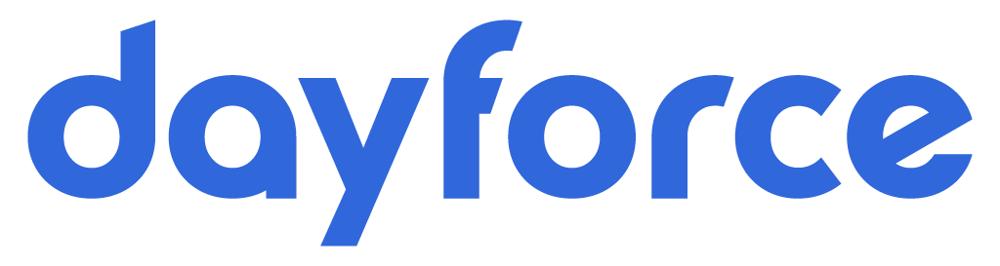

Computer Science Honours Student
Specializing in Management and Business Systems, Co-op Option, with Entrance Scholarship of $8000, Deans' Honour List.
Teaching Assistant
COMP 2406 - Fundamentals of Web Applications
Relevant Courses Completed Discrete Structures I/II, Data Structures and Algorithms, Programming Paradigms, Software Engineering (C/C++), OOP (Java), Python Programming, Database Management Systems
Software Developer Intern May 2025 - August 2025
Contributing engineering solutions to Autodesk’s cloud-based CAD/CAM platform, Fusion

Software Developer Intern 2024
Working in software development for a world leader in Human Capital and Resource Management Technology, developing and maintaining the company's flagship product, Dayforce. Contributed to the development of new features, bug fixes, and enhancements, while ensuring the quality and performance of the product. Collaborated with cross-functional teams to deliver high-quality software, and participated in the full software development lifecycle, including design, development, testing, and deployment.
Junior Developer 2023 - 2024
Work as a Junior Software Developer, developing of the world’s first Integrated Electronic Remote Clinical Trial Medical Records System, optimizing data management, accessibility, accuracy, and regulatory compliance. Implemented real-time patient tracking functionality, enabling comprehensive clinical-level management of enrolled patients in clinical trials, while continuously refactoring existing code base as necessary during constant integration. Developed responsive and interactive dashboards in modern frameworks, addressing UI bugs and new features. Integrated RESTful API design, authorization, and controllers, and unit tests using Jest ensuring application reliability and security

Software Developer Intern 2023
Worked in software development on the Deep Security Manager product team, handling client support cases on an implementation-level. Assisted in the enhancement and maintenance of cloud connectors to ensure seamless user security integration with leading cloud providers, optimizing performance, primarily focusing on the implementation of AWS, GCP and Azure. Created optimized Splunk dashboards, queries, filters, and visualizations to monitor cloud connection metrics for live customer data, efficiently handling 10,000+ synchronizations, reducing processing time from minutes to 11 seconds. Contributed to the implementation of new security features, addressing vulnerabilities, while meticulously tracking the created IAM roles, Lambdas, EC2 instances, and other cloud resources for comprehensive testing documentation

Software Engineer Intern 2022 - 2023
Worked with a team internationally implementing new functionality and refactored the architecture for features including automatic translations and automated PDF merging. Single-handedly developed the front end for a customer administrator portal. Improved the efficiency of existing code. Responsible for maintaining and supporting the codebase for web applications with over 1000 daily transactions, and drafted architecture and engineered SQL tables and queries. Provided technical documentation and presented it to clients.